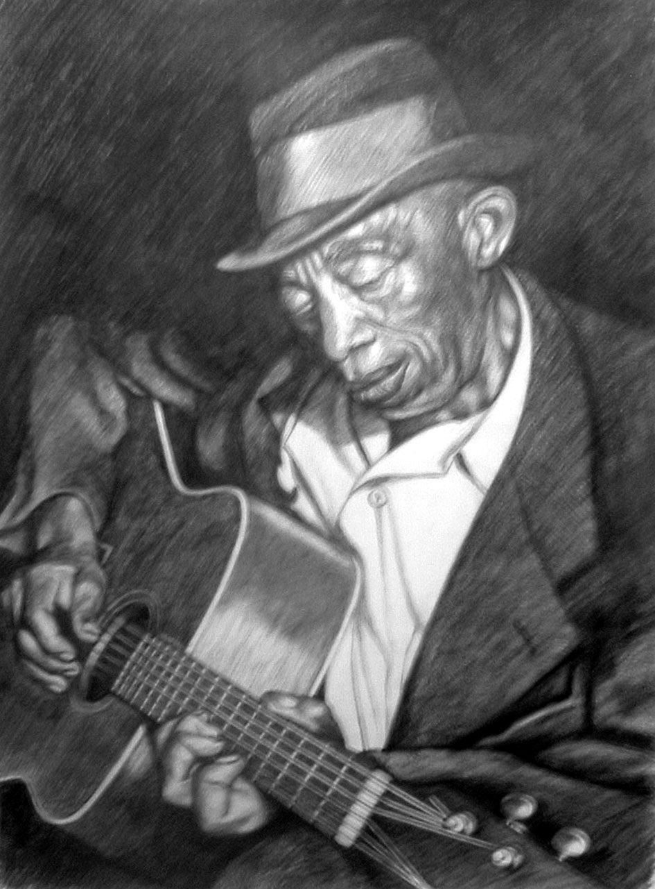

MISSISSIPPI JOHN HURT
1893 - 1966
American country blues singer and guitarist
Raised in Avalon, Mississippi Hurt taught himsefl to play the guitar around the age of nine. He worked as a sharecropper and began playing at dances and parties, singing to a melodious fingerpicked accompaniment.His first recordings, made for Okeh Records in 1928, were commercial failures, and he continued to work as a farmer.

A portrait of John.
The following list is a time line of John's Life
- 1892: Born in Teoc, Carrol County Mississippi
- 1901: Began to teach himself guitar
- 1920s: Worked as a farmhand and sharecropper
- 1923: Began playing with Willie Narmour, a fiddle player
- 1928: Auditioned for producer Tommy Rockwell. His records were commercial failures and rockwell went out of business during the great depression. He returned to work as a sharecropper and continued to play at parties
- 1952: His renditions of "Frankie" and "Spike Driver Blues" were included in The Anthology of American Folk Music
- 1963: His song "Avalon Blues" was discovered, which led to musicologist Dick Spottswood locating Hurt to persuade him to play some songs for him and to convince him to move to Washington D.C.
- 1966: He died of a heart attack on November 2nd in Grenada, Mississippi.